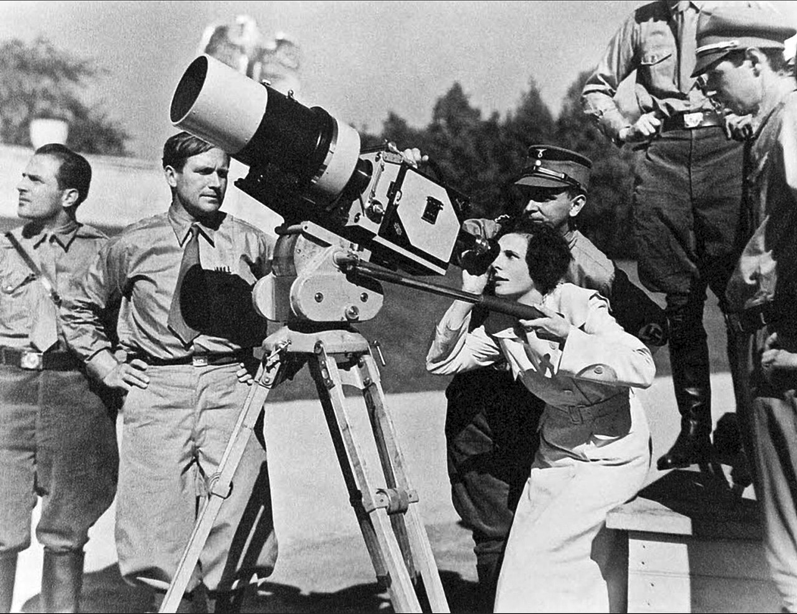

PART 3. 20세기 비판이론 · 6주차 상징성
효율적인 것이
좋은 것인가
테오도르 아도르노 — 동일성과 문화산업
00이 주차의 위상
4~5주차 벤야민이 기술 복제를 기회로 봤다면, 아도르노는 같은 것을 기만으로 봄. 같은 학파, 정반대 결론임.
여는 질문
- 추천 알고리즘은 당신이 좋아할 것을 줌. 그것도 아주 잘 줌.
- 그런데 "좋아할 것"과 "좋은 것"은 같은가.
- 더 불편한 물음 — 당신이 그것을 좋아하게 된 것은, 그것을 계속 받았기 때문 아닌가.
01오늘 만날 개념
- 계몽Aufklärung · Enlightenment
- 18세기 이성 중심 사상. "이성으로 미신과 억압에서 벗어나자"임.
- 변증법dialectic
- 대립하는 것들이 부딪혀 움직여 나가는 논리임. "계몽의 변증법" = 계몽이 스스로를 배반하는 운동.
- 도구적 이성instrumentelle Vernunft
- 목적은 묻지 않고 효율적 수단만 계산하는 이성임. "어떻게 더 빨리?"만 묻고 "왜 빨라야 하나?"는 안 물음.
- 동일성 · 비동일성Identität / Nichtidentität
- 동일성은 서로 다른 것을 하나의 개념 아래 같은 것으로 묶는 것. 비동일자는 그 개념에 안 들어가는 것임.
- 물화reification
- 사람과 관계가 물건처럼 다뤄지는 것임. "인적 자원", "고객 이탈률".
- 양화量化 · quantification
- 질적인 것을 숫자로 바꾸는 것임. 슬픔을 1~10점으로 매기기, 강의를 별점으로 매기기.
- 부정변증법negative Dialektik
- 헤겔 변증법 비판. "부정의 부정은 긍정이 아님." 종합에 도달하지 않고 부정에 머무는 사유임.
- 문화산업Kulturindustrie
- 아도르노·호르크하이머의 조어임. '대중문화'라 부르지 않은 이유 — 대중이 만든 것이 아니기 때문임.
- 탐욕 알고리즘greedy algorithm
- 매 단계에서 당장 가장 좋아 보이는 것을 고르는 방식임. 빠르지만 전역 최적을 보장하지 않음.
02왜 그렇게 어두운가

Jeremy J. Shapiro · CC BY-SA 3.0 · Wikimedia Commons
"아우슈비츠 이후에 서정시를 쓴다는 것은
야만적임."
야만적임."
아도르노 전체의 출발점.
강의 슬라이드는 유대인 학살을 세 가지 메커니즘으로 분석함. 이것이 아도르노 전체의 압축임.
① 과학기술의 사용
가스실- 가장 합리적인 수단으로 가장 야만적인 목적을 달성했음
- 열차 시간표, 물류 최적화, 처리 효율 — 모두 근대 행정의 성취였음
② 병적 혐오감
범주 바깥- 유대인 = 같은 범주에 포함되지 않는 존재
- 자연과 마찬가지로 두려운 존재로 취급됐음
③ 양화된 동일자 취급
번호가 됨- 사람을 번호로 만들고, 숫자로 세고, 처리했음
- 팔에 새긴 문신 번호가 그것임
오늘의 전체 논지가 여기 다 있음
- ① 효율적 계산 ② 범주에 안 들어가는 것의 배제 ③ 양화된 동일자 취급.
- 아도르노는 이 셋이 아우슈비츠에서 극단화되었을 뿐, 근대 이성의 구조 자체라고 봄.
- 그래서 그는 문화산업을 볼 때도 같은 셋을 봄.
- 그리고 우리는 오늘 알고리즘에서 같은 셋을 볼 것임.
03계몽의 변증법
"왜 인류는 인간적 상태로 가지 않고
새로운 야만으로 돌아가는가."
새로운 야만으로 돌아가는가."
나치의 홀로코스트, 스탈린의 강제수용소, 세계대전, 원자폭탄.
계몽이란
- "나는 생각한다, 그러므로 존재한다"(데카르트).
- "주술로부터의 해방"(베버).
- 이성에 대한 믿음과 생활의 합리화임.
- 그런데 관리 사회 안에서 도구적 이성으로 전락함.
"신화가 이미 계몽이었음"
앞의 문장- 신화도 세계를 설명해서 두려움을 통제하려는 시도였음
- 계몽과 같은 충동임. 방법만 달랐을 뿐임
"계몽은 신화로 퇴화함"
뒤의 문장- 이성이 절대화되면 의심할 수 없는 것이 됨
- 의심할 수 없는 것, 그것이 곧 신화임
- "데이터가 그렇게 말한다"는 말이 토론을 끝내버릴 때, 데이터는 신화가 된 것임
문명의 네 단계
원시애니미즘
자연은 두려운 존재임
고대신화
자연을 형상화·이야기화함. 자연과 소통함
근대계몽
기술과 과학. 이성과 합리화로 자연에서 분리됨. 자기동일성의 원칙에 따라 자연을 객체화·동일자화·양화함
현대
인간 학살과 전쟁. 인간 안의 비동일성 제거. 야만적 신화로 퇴화함
04자기동일성 원칙
언어화
상징화
→
물화
사물이 됨
→
체계화 · 기술화 · 제도화
굳어져 기본값이 됨
같은 도식을 알고리즘에 그대로 적용하면
| 아도르노의 단계 | 알고리즘에서 벌어지는 일 |
|---|---|
| 언어화(상징화) | 행동을 로그로 기록함 — "영상 시청 12초" |
| 물화 | 로그를 피처(feature)로 만듦 — "이탈률 0.83" |
| 체계화 | 피처를 벡터로 배열함 — 수백 차원의 사용자 벡터 |
| 기술화 | 벡터로 예측 모델을 학습함 |
| 제도화 | 예측이 추천이 되고, 추천이 기본값이 됨 |
핵심은 첫 단계임. "이 사람이 지루해했다"가 아니라 "이탈률 0.83"이 되는 순간, 지루함의 이유는 영원히 사라짐. 다시는 복원되지 않음.
05문화산업의 여섯 갈래
왜 '대중문화'가 아니라 '문화산업'인가
대중이 만든 것이 아니라 대중에게 공급된 것이기 때문임.
| 갈래 | 내용 |
|---|---|
| ① 규격화된 획일성 | 예술의 참신성과 개성이 소멸함 |
| ② 상품화 | 대량생산됨 |
| ③ 동일성 사유의 재생산 | 예술의 진지한 정신성이 배제되고 본질적 비판 기능이 사라짐 |
| ④ 대중 기만 | 대중이 요구하는 것을 생산하는 것이 아니라 대중의 요구와 반응을 조작함. 미메시스적 수용의 소멸. 대중은 만들어진 허위욕구로 채워진 수동적 존재가 됨 |
| ⑤ 분산적 지각 강요 | 집중·침잠·관조가 소멸함. 산만한 오락 소비 → 퇴행적 |
| ⑥ 비판의식 실종 유도 | 수용자의 체제 순응을 유도함. 관리 사회의 체계가 공고해짐 |
④번 "대중의 요구와 반응을 조작"
- 추천 알고리즘은 선호를 읽는가, 만드는가.
- A/B 테스트는 문자 그대로 반응을 측정하고 조작하는 장치임.
- 사례 — 같은 영상에 두 썸네일을 걸고 클릭률을 측정함. 이것은 "당신이 뭘 좋아하는지 알아내는 것"인가, "당신이 클릭하게 만드는 것"인가.
유사개인화 — 아도르노 자신의 용어임
- 표면적 차이가 근본적 획일성을 감춤.
- 아도르노는 1940년대 대중가요를 분석하며 이 말을 만들었음. "모든 곡이 다르게 들리지만 코드 진행과 후렴 구조는 똑같다."
- 지금 — 모든 피드가 다르게 보이지만 후크 위치·클라이맥스 시점·자막 스타일은 똑같음.
warhol_marilyn.png
앤디 워홀 〈마릴린 먼로〉 (1967, 실크스크린 연작)
저작권 때문에 자동 수집 제외 — 워홀 재단이 저작권 보유 · 자유 라이선스 판본 없음
수업에서는 화면으로 직접 띄우고, 배포 자료에는 넣지 않는 편이 안전함
수업에서는 화면으로 직접 띄우고, 배포 자료에는 넣지 않는 편이 안전함
문화산업 여섯 갈래를 알고리즘으로 다시 읽으면
| 아도르노의 갈래 | 지금의 형태 |
|---|---|
| 규격화된 획일성 | 포맷·길이·썸네일의 수렴. "성공 공식"의 학습 |
| 상품화 | 콘텐츠가 참여도 단위로 환산됨 |
| 대중 기만 | 선호를 읽는 척하며 만듦. 유사개인화 |
| 분산적 지각 강요 | 자동재생 · 무한스크롤 · 숏폼 |
| 비판의식 실종 | 반대 의견은 덜 노출됨. 참여도가 낮기 때문임 |
06벤야민과의 정면 충돌
벤야민 4~5주차
분산적 지각은 기회- 새로운 지각의 훈련장임
- 대도시의 촉각적 지각
- 비판의 조건임
아도르노 오늘
분산적 지각은 퇴행- 퇴행임
- 집중과 침잠의 소멸
- 순응의 조건임
같은 현상, 정반대 평가
두 사람은 실제로 이 문제로 편지를 주고받으며 다퉜음. 스스로 물어볼 것 — 어느 쪽에 설 것인가.
두 사람의 대조 — 슬라이드 정리
| 쟁점 | 벤야민 | 아도르노 |
|---|---|---|
| 공통 기반 | 마르크스주의적 사회비판이론 | |
| 대중매체 평가 | 긍정적 | 부정적 |
| 예술의 사회적 기능 | 중시함. 정치의 예술화(파시즘) ↔ 예술의 정치화(비판) | 관리 사회에 포섭되지 않는 비동일자로 남아야 함 |
| 대중문화의 생산 | 대중화에 긍정적 | 자본에 의한 대량 복제와 생산 |
| 대중문화의 수용 | 능동적 가능성을 봄 | 무비판적·소극적으로 봄 |
| 결론 | 새로운 예술의 시작 | 자본 중심 문화산업의 강화 |

작자 미상 · Public domain · Wikimedia Commons
07탐욕 알고리즘과 도구적 이성
변정수(2025) 3부 1장 「탐욕 알고리즘과 도구적 합리성」.
- 매 단계에서 당장 가장 좋아 보이는 선택을 함.
- 빠르고 단순함. 그런데 전역 최적을 보장하지 않음.
가장 쉬운 사례 — 등산
- "매 순간 가장 가파른 오르막을 고른다"는 규칙으로 산을 오르면 가장 가까운 봉우리에는 반드시 도착함.
- 그런데 그 봉우리가 가장 높은 봉우리는 아님.
- 더 높은 산에 가려면 일단 내려가야 하는데, 탐욕 규칙은 내려가지 않음.
거스름돈 문제 — 탐욕이 최적인지는 '운'임
- 화폐 단위가 1 · 3 · 4원이라 하면, 6원을 만들 때 탐욕은 4+1+1 = 3개임.
- 최적은 3+3 = 2개임.
- 탐욕은 화폐 체계에 따라 최적이기도 하고 아니기도 함. 규칙이 아니라 운임.
도구적 이성과의 정확한 대응
| 탐욕 알고리즘 | 도구적 이성 |
|---|---|
| 매 단계 국소 최적만 좇음 | 목적은 묻지 않고 수단의 효율만 계산함 |
| 전역 최적을 보장하지 않음 | 좋은 삶을 보장하지 않음 |
| 되돌아가지 않음 (비가역) | 자기반성이 없음 |
오늘의 핵심 물음
- 참여도 최적화는 매 순간 국소 최적을 좇는 탐욕 알고리즘임. 클릭률·체류시간·완주율 — 각 단계에서 가장 반응이 좋은 것을 고름.
- 그런데 그 경로의 끝에 무엇이 있는가.
- 아도르노의 답 — "전역 최적은 애초에 물어지지 않았음." 그것이 도구적 이성의 정의임.
08부정변증법 — 비동일자를 구하기
- 현대사회는 이성 중심의 합리화와 시민적 냉혹함이 지배함. 자연과 타인을 객체화함.
- 부정의 부활이 필요함. 문명화는 부정의 영역을 체계적으로 퇴출시킨 과정이었음.
- 부정성이 제거된 언어로는 사회 비판이 불가능함.
헤겔 변증법 비판 — 3주차 회수
- 헤겔은 이성을 중시하고 자연을 배제했음.
- 정반합의 변증법으로 이성의 자연 착취를 정당화했음.
- 부정의 부정은 부정의 강화일 뿐임 → 부정변증법이 필요함.
쉽게 말하면
- 헤겔은 대립이 부딪히면 더 높은 종합에 이른다고 봤음.
- 아도르노는 그 '종합'이 결국 한쪽이 다른 쪽을 삼킨 것이라고 봄.
- 회의에서 "그럼 절충해서 이렇게 합시다"가 늘 좋은 결론인가. 절충안이 약자의 요구를 지워버린 경우를 떠올려 볼 것.
세 테제
- 비동일자의 중요성 동일자(개념적·보편적) 대 비동일자(비개념적·개별적). 개념에 의한 보편자 추구가 전체주의 사고를 정당화하며 개인을 억압함.
- 객체의 실재성·우위 인정 주체가 객체에 의식을 투영하는 위계적 관계가 아님. 주체가 실재하는 개별적 객체의 변화에 순응해야 함. 미메시스를 통한 주체-주체 관계 복원이 필요함 → 4~5주차 벤야민의 미메시스.
- 체계성 비판 개체 간 모순은 합의를 위한 발판이 아니라 비동일성 그 자체로 인정돼야 함. "전체는 비진리" — 전체는 부분들이 공통성으로 통합된 것이 아니라, 서로 대립되는 개체들이 구성한 '적대적 전체'일 뿐임.
09임베딩과 양화된 동일자
변정수(2025) 4부 11장 「마스터 알고리즘과 전일론」.
- 마스터 알고리즘 — 페드로 도밍고스의 구상임. 다섯 학파(기호주의·연결주의·베이즈주의·유추주의·진화주의)를 하나로 통합한 만능 학습 알고리즘임.
- 전일론(holism) — 전체는 부분의 합 이상이며, 전체를 알아야 부분을 안다는 입장임.
아도르노의 정면 반박
"전체는 비진리임." 그렇다면 모든 학습을 통합하는 마스터 알고리즘은 원리적으로 불가능한가. 아니면 가능하지만 그것이 곧 전체주의인가.
임베딩은 '양화된 동일자 취급'인가
- 임베딩은 단어 · 이미지 · 사람 · 행동을 모두 같은 벡터공간의 점으로 만듦.
- 그래야 거리를 측정하고, 비교하고, 계산할 수 있음.
- 아도르노가 아우슈비츠 분석에서 쓴 말을 다시 볼 것 — "양화된 동일자 취급".
물음 세 개
- 모든 것을 하나의 벡터공간에 넣는 임베딩은 아도르노가 말한 그것인가.
- 비동일자는 임베딩에서 어떻게 되는가. 벡터공간에 표현되지 못하는 것은 존재하지 않는 것이 되는가. 아니면 가장 먼 점(이상치)이 되어 제거되는가.
- 이상치 제거는 기술적 조치인가, 정치적 조치인가.
실무에서는 당연한 일임
이상치 제거는 성능을 위해 당연히 하는 일임. 그런데 그 이상치가 소수 언어 사용자, 희귀 질환자, 비전형적 얼굴이라면 어떻게 되는가.
10기능없음의 기능
진정한 예술
- 세상에 드러나지 않은 진리의 계기를 포함함.
- 부정과 비판의 역할을 수행함.
- 체계에 포함되지 않는 탈주 → 아방가르드.
Marcel Duchamp / Alfred Stieglitz · Public domain · Wikimedia Commons
"예술작품이 어떤 사회적 기능을 지닌다고 단언할 수 있다면 그것은 작품의 무기능성임. 예술의 기능은 바로 기능없음에 있음. 예술은 기꺼이 사회 내의 눈엣가시임. 관리되는 사회에 편입되지 않은 채 이를 비판할 수 있는 비동일자로 남아야 함."
『미학이론』 · 강의 슬라이드 인용문.
마지막 물음
- 모든 것이 최적화되는 시대에 '기능 없음'은 가능한가.
- 알고리즘은 모든 콘텐츠에 참여도 점수를 매김. 점수 없는 콘텐츠는 없음.
- "쓸모없음"조차 니치 콘텐츠로 분류되어 추천됨. "아무것도 하지 않는 영상"이 힐링 콘텐츠 범주가 되어 조회수를 올림.
- 아방가르드는 여전히 탈주할 수 있는가, 아니면 이미 태그가 붙었는가.
아도르노의 한계 — 슬라이드가 이미 지적한 것
두 가지 결여
- 매체 사용의 다양한 가능성을 간과했음 — 억압적 미디어와 해방적 미디어의 구별이 없음.
- 수용자 관점이 결여됐음 — 자본의 대중문화 생산에만 초점을 둠. 수용자를 소극적·무비판적 존재로 간주함.
- 아도르노는 강력하지만 사람들이 실제로 무엇을 하는지 보지 않았음. 팬덤, 밈, 리믹스, 2차 창작 — 이것들은 문화산업의 산물인가, 그 안에서의 저항인가.
- → 13주차 플루서가 정반대 답을 준비하고 있음(대화형 구조, 호모 루덴스).
11정리 · 흔한 오해 · 토론
이번 주 개념 다섯
- 계몽의 변증법 이성이 해방의 도구에서 지배의 도구로 뒤집히는 운동임.
- 자기동일성 원칙 언어화 → 물화 → 체계화 → 기술화 → 제도화. 다른 것을 같게 만드는 절차임.
- 문화산업 대중이 만든 것이 아니라 대중에게 공급된 문화. 규격화·상품화·기만.
- 유사개인화 표면적 차이가 근본적 획일성을 감춤.
- 비동일자 · "전체는 비진리" 개념에 안 들어가는 것. 그리고 전체는 적대적 전체일 뿐이라는 테제임.
흔한 오해 셋
오해 1 — "아도르노는 대중문화를 무시한 엘리트주의자"
- 교정 — 그런 비판이 실제로 있고 슬라이드도 인정함.
- 다만 그의 표적은 작품의 수준이 아니라 생산·수용의 구조임.
- "재미있는 걸 좋아하면 안 된다"가 아니라 "당신의 취향이 어디서 왔는지 묻자"임.
오해 2 — "동일성 = 획일화"
- 교정 — 더 정확히는 "다른 것을 같은 것으로 다루는 인식의 절차"임.
- 결과가 획일화일 뿐, 절차 자체가 문제라는 것이 핵심임.
오해 3 — "부정변증법 = 무조건 반대"
- 교정 — 아님. 종합에 성급히 도달하지 않고 모순을 모순으로 견디는 사유임.
- 반대가 아니라 유보에 가까움.
토론 질문
- 참여도 최적화는 '좋은 삶'을 보장하는가.
보장하지 않는다면 무엇으로 대체할 수 있는가. 대안 목표를 하나 제안해 볼 것. 그리고 그것을 측정할 수 있는지 따져볼 것. 측정할 수 없으면 최적화도 불가능함. 이 난점 자체가 아도르노의 논지임. - 모든 것을 하나의 벡터공간에 넣는 임베딩은 "양화된 동일자 취급"인가.
비동일자는 임베딩에서 어떻게 되는가. 표현 불가인가, 이상치인가, 제거인가. - "전체는 비진리"라면, 모든 학습을 통합하는 마스터 알고리즘은 원리적으로 불가능한가.
아니면 가능하되 그 성공이 곧 위험인가. - 분산적 지각은 비판의 조건인가 순응의 조건인가.
벤야민과 아도르노 중 각자 입장을 정하고 근거를 댈 것. - '관여(engagement)'는 수동성의 극복인가, 더 정교한 포섭인가.
같은 단어가 미술관과 플랫폼에서 다른 뜻인가, 같은 뜻인가. - 모든 콘텐츠에 참여도 점수가 매겨지는 시대에 '기능 없음'은 가능한가.
12참고자료
이번 주 읽기
- B 심혜련 (2012). 『20세기의 매체철학』 — 1부 3장
- C 심혜련 (2024). 『21세기의 매체철학』 — III부 4장 1절 「관조에서 관여로」 pp.353~359
- D 변정수 (2025). 『알고리즘으로 철학하기』 — 3부 1장 + 4부 11장
원전
- 아도르노·호르크하이머. 『계몽의 변증법』 — 「문화산업: 대중 기만으로서의 계몽」 장만. 학부생도 읽을 수 있음
- 아도르노. 『미학이론』 — 무기능성 대목만
- 아도르노. 『부정변증법』 — 서론
보조
- 신혜경 (2011). 『벤야민 & 아도르노: 대중문화의 기만 혹은 해방』. 김영사 4~5주차 대질용으로 가장 쉬움
- 페드로 도밍고스. 『마스터 알고리즘』 09절 대질용
이어지는 주차
- 7주차 — 귄터 안더스 · 하이데거: 팬텀과 매트릭스 물질성
안더스는 하이데거와 아도르노를 함께 계승함. 오늘의 논의가 곧바로 이어짐.